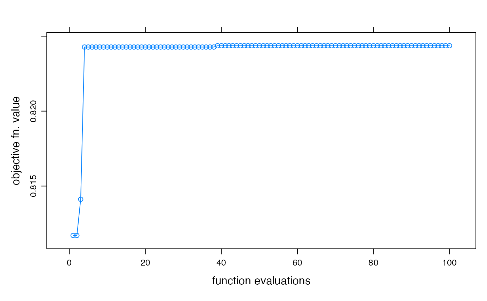

Fit a hydromad model by sampling the parameter space. Returns best result from sampling in parameter ranges using random, latin hypercube sampling, or a uniform grid (all combinations). The function also retains the parameter sets and objective function values, which can be used to define a feasible parameter set
fitBySampling(
MODEL,
objective = hydromad.getOption("objective"),
samples = hydromad.getOption("fit.samples"),
sampletype = c("latin.hypercube", "random", "all.combinations")
)a model specification created by hydromad. It
should not be fully specified, i.e one or more parameters should be defined
by ranges of values rather than exact values.
objective function to maximise, given as a
function(Q, X, ...). See objFunVal.
number of parameter sets to test.
sampling scheme -- see parameterSets.
the best model from those sampled, according to the given
objective function.
See parameterSets.
data(Cotter)
x <- Cotter[1:1000]
## IHACRES CWI model with armax unit hydrograph fitted by least squares
modx <- hydromad(x, sma = "cwi", routing = "armax", rfit = "ls")
modx
#>
#> Hydromad model with "cwi" SMA and "armax" routing:
#> Start = 1966-05-01, End = 1969-01-24
#>
#> SMA Parameters:
#> lower upper
#> tw 0 100
#> f 0 8
#> scale NA NA
#> l 0 0 (==)
#> p 1 1 (==)
#> t_ref 20 20 (==)
#> Routing Parameters:
#> NULL
#> Routing fit spec.: "ls"
foo <- fitBySampling(modx)
summary(foo)
#>
#> Call:
#> hydromad(DATA = x, sma = "cwi", routing = "armax", rfit = "ls",
#> tw = 95.9596, f = 3.87879, l = 0, p = 1, t_ref = 20, scale = 0.00134404)
#>
#> Time steps: 900 (0 missing).
#> Runoff ratio (Q/P): (0.7028 / 2.285) = 0.3075
#> rel bias: 0.06098
#> r squared: 0.7004
#> r sq sqrt: 0.8015
#> r sq log: 0.814
#>
#> For definitions see ?hydromad.stats
#>
## plot objective function value improvement over time
xyplot(optimtrace(foo),
type = "b",
xlab = "function evaluations", ylab = "objective fn. value"
)
